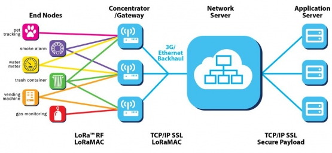

接口和网关技术
概述
接口和网关在未来的物联网时代会扮演重要的角色，它将成为连接物联网与传统通信网络的纽带。作为接口和网关，它在使用不同的通信协议、数据格式或语言，甚至体系结构之间起到翻译作用。既可以用于广域互联网，也可以用于局域互联网。此外，物联网网关还需要具备设备管理功能，运营商通过物联网网关设备可以管理物联网的各感知节点，了解各节点的相关信息，实现远程控制。

JUMA的IP和服务
IP和服务包括：
- 2G/3G/4G移动通信网关：将蓝牙或者2.4GHz的数据通过2G/3G/4G设备上传至互联网，适用于户外场景，如农场、交通、汽车等场所。
- 以太网网关：将蓝牙或者2.4GHz的数据通过以太网设备上传至互联网，适用于工厂、办公楼宇等场所。
- 串口透传接口：将蓝牙或者2.4GHz的数据转换成通用串口数据，接入到中控设备。如果客户拥有现有产品方案，借此可以方便、快速地实现产品的改造升级。